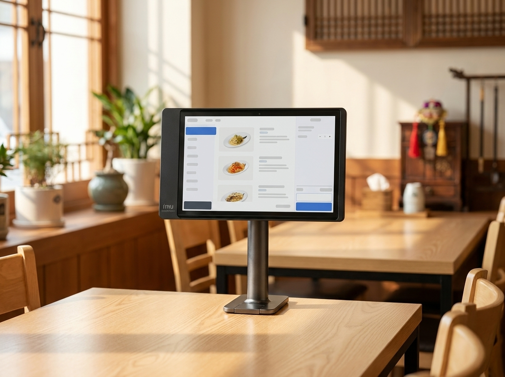

노란우산공제, 소상공인 사장님이 왜 챙겨야 할까요? 개념부터 정리했습니다
결론부터 말씀드리면, 노란우산공제는 소상공인·자영업 사장님이 폐업이나 노후에 대비하도록 국가가 뒷받침하는 공적 공제제도이며, 매달 부금을 쌓아 두었다가 폐업·사망 등 사유가 생겼을 때 목돈으로 돌려받는 구조입니다. 운영은 중소기업중앙회가 맡고 있고, 납입한 부금에는 일정한 세제 혜택 성격이 있는 것으로 안내됩니다. 저희 누리네트웍스는 서울·인천·경기 수도권에서 14년간 3만여 매장의 결제 환경을 직접 챙겨온 POS·결제단말 대리점으로서, 사장님들이 단말기 너머의 매장 운영 전반을 함께 살피실 수 있도록 이런 제도도 정리해 드립니다. 다만 이 글은 개념 안내이며, 정확한 자격·한도·공제율·소득공제 한도는 시기에 따라 달라질 수 있으므로 반드시 중소기업중앙회 노란우산 공식 안내와 국세청 홈택스에서 최신 기준으로 확인하셔야 합니다.
노란우산공제, 한마디로 무엇인가요?
노란우산공제는 소상공인과 자영업 사장님이 매달 일정 금액(부금)을 적립해 두었다가, 폐업·사망 등 정해진 사유가 발생했을 때 그동안 쌓인 부금과 이자를 공제금 형태로 돌려받는 제도입니다. 근로자에게 퇴직금이 있다면, 사장님에게는 마땅한 안전망이 없다는 문제의식에서 출발한 제도라고 이해하시면 쉽습니다.
운영 주체는 중소기업중앙회입니다. 흔히 말하는 사설 보험 상품과는 성격이 다르고, 소상공인의 생활 안정과 사업 재기를 돕기 위한 공적 공제 제도로 자리 잡아 왔습니다. 송도에서 카페를 하시든, 동탄에서 음식점을 하시든, 판교에서 소형 매장을 운영하시든 업종과 지역에 관계없이 소상공인 요건에 해당하면 살펴볼 수 있는 제도입니다.
특히 이 제도는 폐업이라는 위기 상황에 대비한다는 점이 핵심입니다. 장사가 잘될 때는 잘 와닿지 않지만, 예기치 못하게 매장을 접어야 할 때 그동안 쌓아 둔 부금이 재기의 종잣돈이 되어 준다는 점에서 많은 사장님들이 관심을 두고 계십니다.
노란우산공제, 개념을 표로 정리하면
아래 표는 사장님들이 자주 궁금해하시는 항목을 개념 위주로 정리한 것입니다. 구체적인 수치나 조건은 담지 않았으니, 방향만 잡는 용도로 봐 주세요.
| 항목 | 개념 설명 | 성격 | 참고 |
|---|---|---|---|
| 운영주체 | 중소기업중앙회가 운영하는 공적 공제 | 공공성 | 공식 안내 확인 |
| 가입대상 | 소상공인·자영업 사업자 중심 | 자격 요건 있음 | 자격 여부 별도 확인 |
| 부금 납입 | 매달 정한 금액을 꾸준히 적립 | 적립식 | 한도·방식 확인 |
| 세제 혜택 | 납입액에 소득공제 성격이 있다고 안내 | 절세 성격 | 홈택스·공식 확인 |
| 지급 사유 | 폐업·사망 등 정해진 사유 발생 시 | 안전망 | 사유별 조건 확인 |
| 압류 보호 | 공제금에 대한 보호 성격이 언급됨 | 자산 보호 개념 | 정확한 범위 확인 |
위 표는 어디까지나 개념을 잡기 위한 정리이며, 자격·한도·공제율·지급 조건 등 정확한 내용은 반드시 중소기업중앙회 노란우산 공식 안내와 국세청 홈택스에서 최신 기준으로 확인하시기 바랍니다. 제도 내용은 시기에 따라 달라질 수 있어 단정적으로 받아들이지 않으시는 편이 안전합니다.

왜 소상공인 사장님에게 유용할까요?
첫째, 폐업·노후 대비입니다. 자영업은 경기와 상권 변화에 민감해서, 아무리 성실히 운영해도 예기치 못하게 매장을 정리해야 하는 순간이 올 수 있습니다. 이때 매달 조금씩 쌓아 둔 부금이 목돈이 되어 다음 걸음을 뗄 여유를 만들어 줍니다.
둘째, 절세 성격입니다. 납입한 부금에 대해 소득공제 성격의 혜택이 있는 것으로 안내되고 있어, 매년 세금을 신고하시는 사장님이라면 관심 가질 만합니다. 다만 공제 한도와 적용 방식은 소득 규모나 사업 형태에 따라 달라질 수 있으므로, 홈택스와 공식 안내에서 본인 기준을 확인하시는 것이 중요합니다.
셋째, 자산 보호 개념입니다. 노란우산 공제금에는 일정한 압류 보호 성격이 있다고 언급되는데, 이는 어려운 상황에서도 최소한의 재기 밑천을 지킬 수 있도록 한다는 취지로 이해됩니다. 다만 보호의 정확한 범위와 조건은 개념 이상으로 단정하기 어려우니, 반드시 공식 자료를 확인해 주세요.
실제로 사장님들이 고민하시는 순간을 떠올려 보면 이렇습니다. 오래 운영하던 가게의 임대차 계약이 끝나 자리를 옮겨야 할 때, 건강이 나빠져 부득이하게 매장을 접어야 할 때, 은퇴 시점을 앞두고 사업을 정리할 때 등입니다. 이런 상황에서 그동안 꾸준히 쌓아 둔 부금은 심리적으로도, 현실적으로도 큰 버팀목이 됩니다. 가입 접근은 어렵지 않습니다. 중소기업중앙회 노란우산 공식 채널을 통해 안내를 받으실 수 있고, 은행 등 협력 창구에서도 상담이 가능한 것으로 알려져 있습니다. 본인의 자격과 조건을 확인한 뒤 결정하시면 됩니다.
매장 운영 전반을 함께 챙기는 누리네트웍스
노란우산공제가 사장님의 미래를 지키는 제도라면, 저희 누리네트웍스는 사장님의 오늘의 매장 운영을 뒷받침합니다. 제도로 노후와 폐업을 대비하듯, 매장의 결제·비용 구조를 촘촘히 챙기는 것도 사장님을 지키는 중요한 축이기 때문입니다.
누리네트웍스는 서울·인천·경기 수도권을 직접 방문 설치하는 POS·결제단말 전문 대리점입니다. 14년간 3만여 매장과 함께해 왔고, 200곳 이상의 레퍼런스와 연매출 70억 규모의 안정적인 운영 기반을 갖추고 있습니다. 중간 유통을 줄인 거품 뺀 직접 공급가로 안내드리며, 구체적인 가격은 매장 상황에 맞춰 상담 시 정확히 안내해 드립니다. 참고로 토스단말기와 네이버단말기는 월 0원·약정 없음으로 부담 없이 시작하실 수 있습니다.
포스, 테이블오더, 키오스크, 카드단말기까지 매장에 필요한 결제 환경을 한 번에 구성해 드리고, 설치 이후의 사후 관리까지 직접 챙깁니다. 신규 개업을 준비하시는 사장님은 물론, 기존 단말기의 유지비가 부담스러워 교체를 고민하시는 사장님, 매장을 확장하며 결제 동선을 새로 짜야 하는 사장님까지 상황에 맞춰 함께 설계해 드립니다. 공적 제도로 미래를 준비하시면서, 매장의 비용 구조는 저희와 함께 점검해 보시길 권해 드립니다.
자주 묻는 질문(FAQ)
Q. 노란우산공제는 누가 운영하나요?
중소기업중앙회가 운영하는 공적 공제제도입니다. 사설 보험과는 성격이 다르며, 소상공인의 생활 안정과 재기를 돕는 취지로 마련되었습니다. 자세한 내용은 중소기업중앙회 노란우산 공식 안내에서 확인하실 수 있습니다.
Q. 소득공제가 정말 되나요? 얼마나 되나요?
납입 부금에 소득공제 성격의 혜택이 있는 것으로 안내되고 있으나, 한도와 적용 방식은 소득 규모·사업 형태에 따라 달라질 수 있습니다. 정확한 기준은 반드시 국세청 홈택스와 노란우산 공식 안내에서 본인 상황에 맞게 확인하시기 바랍니다. 이 글에서 금액을 단정해 드리기는 어렵습니다.
Q. 저도 가입 자격이 되나요?
소상공인·자영업 사업자를 중심으로 대상이 정해져 있으나, 업종·규모 등 세부 요건이 있습니다. 본인이 대상에 해당하는지는 중소기업중앙회 노란우산 공식 채널에서 확인하시는 것이 가장 정확합니다.
Q. 포스나 결제단말기 상담도 함께 받을 수 있나요?
네, 저희 누리네트웍스는 수도권 매장을 직접 방문해 포스·테이블오더·키오스크·카드단말기를 안내해 드립니다. 제도는 공식기관에서 확인하시고, 매장 결제 환경은 1544-7754로 문의 주시면 거품 뺀 직접 공급가로 상담해 드립니다.
매장 운영, 결제부터 편하게 시작하세요
노후와 폐업 대비는 노란우산 공식 안내와 홈택스에서 꼼꼼히 확인하시고, 매장의 결제·비용 구조는 누리네트웍스가 함께 챙겨 드리겠습니다. 수도권 어디든 직접 방문해 사장님 매장에 꼭 맞는 결제 환경을 제안드립니다. 부담 없이 문의 주세요.
- 📞 전화상담 1544-7754
- 🌐 홈페이지 nwpos.co.kr


이미지1-매장: 수도권 소형 매장에서 사장님이 계산대를 정리하며 하루를 준비하는 장면
이미지2-제품: 매장 계산대에 놓인 누리포스 단말기와 테이블오더 기기의 깔끔한 제품 컷
이미지3-사용: 손님이 테이블오더로 주문하고 사장님이 여유롭게 매장을 살피는 사용 장면